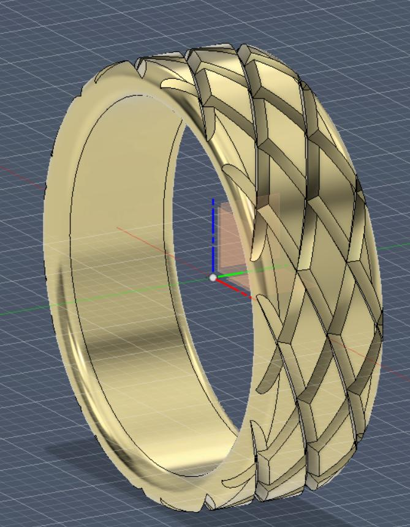
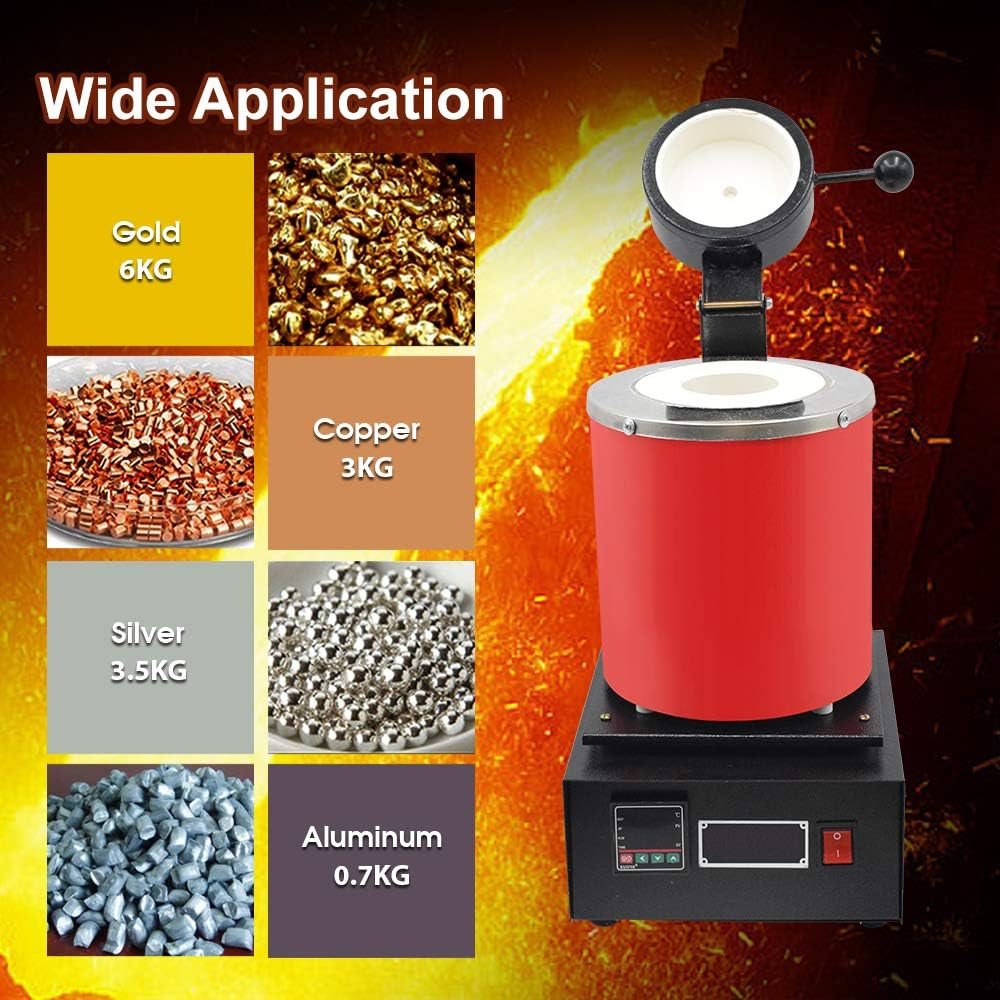

Process of Jewelry Creation
Through the use of 3D printing technology, I started learning about the process of jewlery making. I audited a course offered by ODU’s art department Arts291/391/392/393 Metalsmithing and Jewelry.
Self directed research uncovered jewelry making with precious metals is an intricate process. It is a form of art.
This has not detered my efforts. I recognized FDM printing is does not produce appropriate models for use in later stages of jewelrymaking. This lead to a purchase of a new tool.
Step 1: Designing - Modeling in 3d software. Fusion360 or Rhino7. Jewelry industry uses Rhino7 and its cheaper.
{kind=link}
Step 2: Printing Prototypes - FDM is used as a proof of concept to inspect dimensions.
Step 3: Casting - Casting is an intricate process that requires significants amount of energy. States of matter change from solid to molten metal and cooled back to solid. Lost wax casting.
Step 4: Stone Setting - If stones are desired for the piece, sizing of stones and type are considered and then set appropriately according design requirments.
Step 5: Polishing
Step 6: Find market entry.
Resin Printing
Yet to be used, I added a Creality Halot One resin printer. Resin printers are capable of producing significantly more detailed prints and printing mediums which removes the presence of layering.
Resin printing is an extremely intricate process and requires several other tools, personal protective equipment (PPE), ventilation, workspace expansion, and UV curing and washing capabilities is additional processing unique to resin printing.
Casting Process
There are various techniques used to create jewelry. Casting, Sandcasting, and a hand made process to name a few.
{kind=link}
This is a 3kg melting furnace. Pictured are varying material weights which can be smelted. Their capacities vary due to their different densities.
Density of Materials
Au Gold - 19.3 g/cm^3
Cu Copper - 8.96 g/cm^3
Ag Silver - 10.49 g/cm^3
Al Aluminum - 2.7 g/cm^3
Pb Lead - 11.34 g/cm^3
Periodic Table <https://www.rsc.org/periodic-table/>
{kind=link}